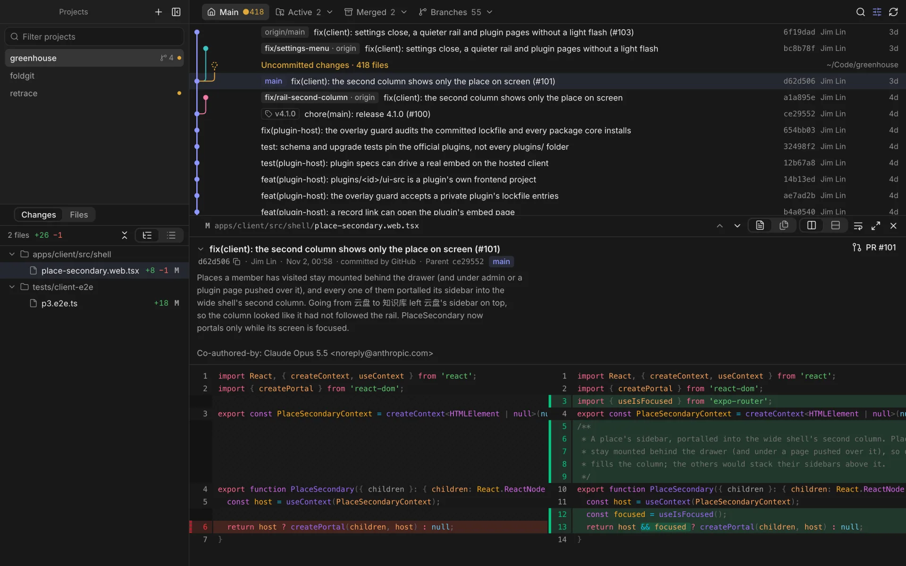
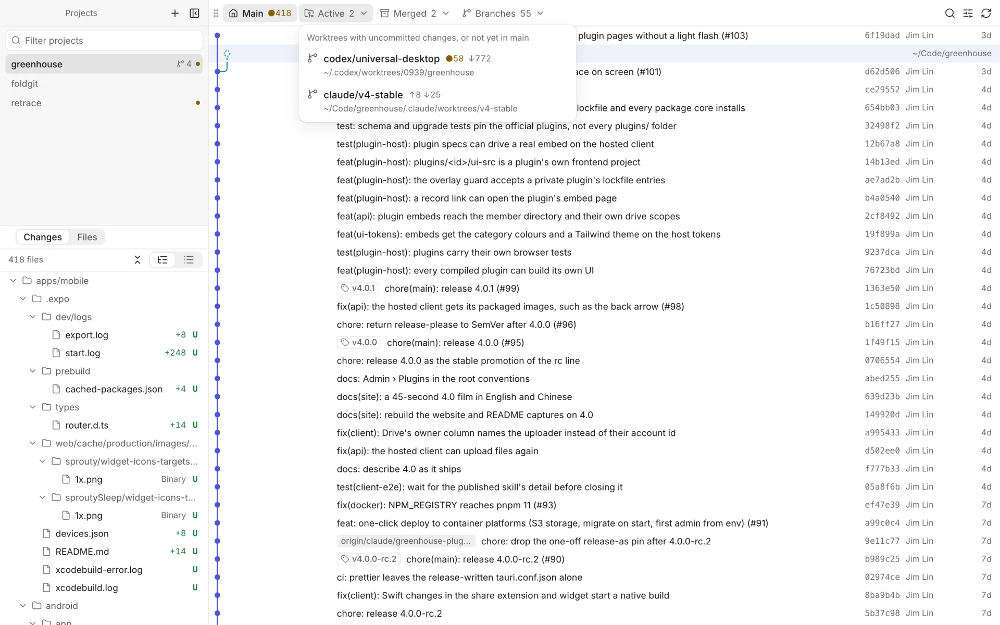

The integration branch stays left
main owns column 0 of a compact, one-line graph. Other branches join only when you ask for them.
For the age of coding agents
Retrace puts every repository, worktree and branch in one window, keeps your integration branch pinned left, and opens any commit's message and diff with a click. It never commits, merges or rewrites a thing.
Twelve worktrees, four agents, one review. Projects and changes on the left, the commit graph on top, the commit you picked underneath.

main owns column 0 of a compact, one-line graph. Other branches join only when you ask for them.
Active, merged and branch-only trees sit in three menus. Remove merged ones safely: no --force, checked again first.
Side by side, no wrapping, highlighted off the main thread. One file at a time, or the whole commit in a row.
See the whole tree as it was at any commit. Code, images, and Markdown rendered like GitHub.
Drag any view to dock it beside another or swap them. Close the diff and the graph takes the space.
Native menu bar, keyboard first, light and dark, English and 中文. Built with Tauri: a few megabytes, not a browser.
Agents are busy in those trees. Retrace reads with GIT_OPTIONAL_LOCKS=0, never takes the index lock, and lists changes with plumbing that doesn't touch the index.
git commit -m "…"nevergit add -Anevergit merge · git rebasenevergit reset --hardnevergit push --forcenevergit stash dropnevergit fetchremote-tracking branches only · can be offgit worktree removemerged & clean · after you confirm · no --force
Press a key below — or on your keyboard.
Free and open source. macOS 13 or later.
Not notarised yet: if macOS refuses the first launch, choose Open Anyway in System Settings → Privacy & Security, or run xattr -dr com.apple.quarantine /Applications/Retrace.app.